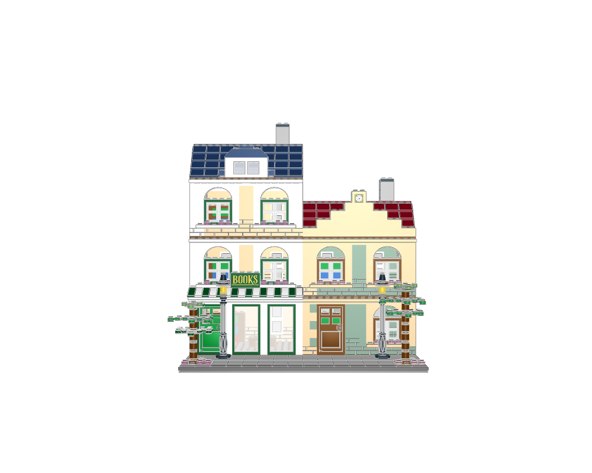
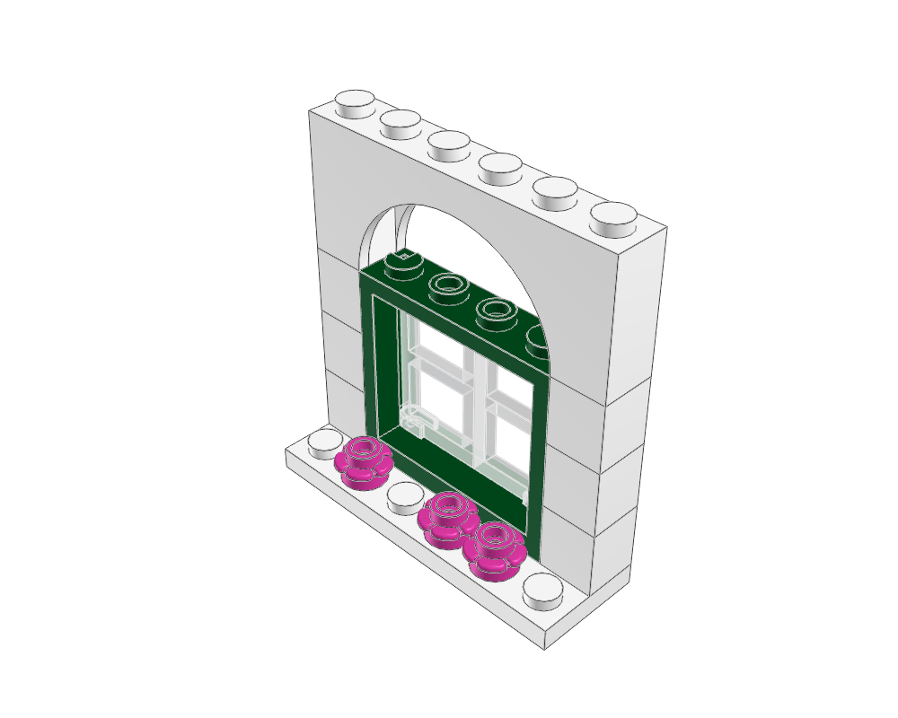

HELLO, HUMAN! CASE STUDY 04
AI에게 레고 설계를 맡기려면
무엇이 필요할까?
ldraw-nova 사례연구. 제작자 시연에서 살펴본 생성·검토와 빌더의 역할.
설계 명세로 조립하고, 검사하고, 다시 만드는 전시 빌더를 생각해 봅니다.

“작은 동네 서점을 레고로 만들어 주세요.”
AI가 내놓은 장면에 창문도, 간판도, 나무도 있습니다. 제법 근사합니다. 이제 책상 위에서 조립하려고 한다면 질문이 바뀝니다. 이 창문 부품은 실제로 존재할까요? 차양은 어디에 연결될까요? 완성된 건물은 혼자 서 있을까요?
ldraw-nova는 계획을 세우고 도구를 실행하는 AI 에이전트가 레고 모델을 설계하도록 돕는 오픈소스 프로젝트입니다. 부품을 찾고, 모델을 만드는 코드를 작성하고, 검사 결과와 모델을 화면에 그린 렌더링 이미지를 보며 수정할 도구를 제공합니다.
이 사례가 흥미로운 이유는 완성 이미지 뒤의 기록에 있습니다. 작은 창문이 커지고, 비슷하던 지붕이 달라지고, 잘못 연결된 차양을 고칩니다. 그런데 마지막 검사표에는 여전히 “물리적 타당성은 증명되지 않았다”고 적혀 있습니다.
그 기록을 따라가면 AI를 업무에 적용할 때도 쓸 수 있는 방법이 보입니다. AI가 고칠 수 있는 설계 명세를 남기고, 빌더가 그 명세를 계산·검사해 결과로 바꾸는 방법입니다. 후반부에서는 이를 브랜드·기획전을 만드는 전시 빌더에 적용해 보겠습니다.
AI가 생성 규칙과 조립 계획을 만들고, 빌더가 계산·검사해 결과로 바꿉니다.
창문·차양 같은 부분 조립물(모듈)을 확인하고 전체에 반영합니다.
검사 통과, 검사 생략, 아직 증명하지 못한 것을 따로 읽습니다.
한 장의 그림에서, 부품을 고칠 수 있는 모델로
먼저 LDraw를 알아두면 뒤의 이야기가 쉬워집니다. 레고 부품과 모델을 텍스트로 표현하는 파일 형식입니다. 부품을 놓는 기록에는 어떤 부품인지, 무슨 색인지, 어디에 어떤 방향으로 놓는지가 들어갑니다. 지원 프로그램은 이 정보를 3D 모델로 보여줍니다.
“여기에 창문이 보인다”
화면의 색과 모양을 다룹니다.
부품 목록이나 연결 정보가 있다는 뜻은 아닙니다.
“이 부품을 여기에 놓는다”
- 부품
- 어떤 파일을 참조하는가
- 배치
- 위치와 방향은 무엇인가
- 표현
- 어떤 색을 사용하는가
부품과 하위 조립물을 수정할 수 있습니다.
실제 조립 가능성은 별도로 확인해야 합니다.
개념 비교를 위한 도식입니다. 어느 쪽도 화면만으로 실물 조립을 보증하지 않습니다.
ldraw-nova의 README는 LDraw 소스 외에 3D 뷰어·플레이어, VR 보기, 이미지, Blender에서 편집할 수 있는 .glb 파일도 결과물로 소개합니다. 웹앱은 별도 저장소인 ldraw-nova-docker에서 제공하며 두 저장소의 태그를 맞춰 사용하는 구조입니다.
제작자 영상에서 보이는 ‘만들고 살펴보는’ 작업 환경
제작자가 2026년 10월 3일 올린 시연은 요청부터 결과 확인까지를 한 작업 환경으로 보여줍니다. 채팅에서 생성 작업을 진행하고, 사용할 에이전트를 선택하며, 만들어진 모델을 3D·VR로 살펴봅니다. 설명란은 조립 과정을 다시 재생하는 Player 모드와 Blender에서의 부품 편집도 소개합니다.
해당 시점의 시연 화면과 제작자 설명을 확인했습니다. Player의 재생은 제작 결과를 살펴보는 기능이며 실물의 결합·강도·조립 경로를 인증한다는 뜻은 아닙니다.
이 시연을 빌더 관점에서 읽으면 요청 → 생성 → 검토 → 수정이 이어지는 제작 환경이 보입니다. 그 안에서 조립 계획을 실제 모델 파일로 바꾸는 공통 실행 도구가 다음 절의 빌더입니다. 화면에서 결과를 조작하는 기능과, 계획을 계산·검사하는 기능이 서로 연결됩니다.
이 글에서는 그중 모델을 만드는 과정에 집중하겠습니다. 완성 장면을 한 번 얻는 데서 끝나지 않고, “창문을 조금 더 넓혀 달라”는 요청을 어떻게 다시 실행 가능한 변경으로 만들었는지가 핵심입니다.
확인 자료 · LDraw 파일 형식, 부품 참조 ↗ · 프로젝트의 결과물과 실행 구성 ↗
AI가 규칙을 쓰고, 빌더가 조립 계획을 실행하다
제작자는 여러 실험을 거치며 한 가지 방향을 발견했다고 설명합니다. AI가 기하 계산의 답을 직접 나열하는 것보다, 그 계산을 수행하는 Python 코드를 작성하게 하는 편이 더 나았다는 것입니다. 이는 제작자의 관찰이며 모든 모델에 대한 비교 실험 결과는 아닙니다.
창문 세 개를 같은 간격으로 놓는다고 생각해 보겠습니다. 좌표를 각각 고치는 방법도 있지만, “첫 창문의 위치 + 순서 × 간격”이라는 규칙이 있으면 간격 하나를 바꿔 전체를 다시 계산할 수 있습니다.
위치 = 120 + 순서 × 160순서: 0, 1, 2반복 계산의 원리만 보여주는 헬로우 휴먼 도식입니다. 임의의 좌표를 사용하며 실제 Copper Lane·LDraw 생성기나 조립 검사를 실행하지 않습니다.
조립 계획을 모델 파일로 바꾸는 공통 도구, 빌더의 코드도 이 원리를 따릅니다. builder.py는 회전 계산, 반복 배치, 계획 형식 검사, 부품 참조 확인을 수행합니다. 없는 부품이나 부적절한 색상은 오류로 처리합니다. 지원하는 쌓기 방식에서는 돌기와 그 돌기가 끼워지는 소켓의 위치가 맞는지도 확인합니다.
계획의 구조, 부품·모듈 참조, 색상과 중복 식별자를 확인합니다.
다른 계획 파일을 포함하고, 하위 모듈의 의존 순서를 정리합니다.
반복 횟수와 간격, 회전, 모듈의 기준점에 따라 부품을 배치합니다.
LDraw 모델을 출력하고 검증 과정에서 확인한 오류·진단을 돌려줍니다.
빌더 코드의 지원 범위를 요약했습니다. 기준점 정렬과 파일 검사는 실물 조립의 완전한 증명이 아닙니다.
핵심은 AI의 판단을 다시 실행할 수 있는 입력으로 남기는 것입니다. AI는 어떤 모양을 만들지와 규칙을 제안하고, 빌더는 정해진 규칙으로 계산합니다. 입력 계획·부품 자료·도구 버전을 맞추면 변경을 비교하기도 쉬워집니다.
- 01AI가 의도와 구성을 정리서점의 분위기, 건물 구성, 필요한 부품과 예제계획
- 02Python 생성기를 작성·수정반복 규칙으로 부품·위치를 항목별로 정리한 JSON 조립 계획 생성규칙
- 03공통 빌더가 계산·검사형식과 참조를 확인하고 배치를 계산해 LDraw 출력실행
- 04렌더링과 검사 기록을 검토문제가 보이면 생성 규칙과 계획을 고친 뒤 다시 실행검토
이 예제에서는 Python 생성기 → JSON 조립 계획 → 빌더 순서입니다. 다른 예제의 설계 문서와 생성기 구성까지 모두 같은 파일 순서라는 뜻은 아닙니다.
이 구조의 이점은 문제를 발견했을 때 돌아갈 위치가 생긴다는 것입니다. 결과 파일의 창문만 옮기면 다음 생성 때 원래대로 돌아갈 수 있습니다. 예제 문서도 계속 유지할 변경은 생성기에 반영하라고 안내합니다.
확인 자료 · 제작자의 실험과 설계 방향 ↗ · 빌더 코드 ↗ · Copper Lane 생성기 ↗
AI의 작업대에 올려놓은 네 가지
이 프로젝트는 모델 하나에 모든 지식을 기대하지 않습니다. 차량·건물·우주선·Technic 구조물 등 작업에 맞는 안내서와 예제, 부품 검색, 검사, 렌더링 도구를 함께 제공합니다. AI가 할 일을 계획하고 도구를 실행하는 동안 참고할 작업 환경을 만든 셈입니다.
모델 유형별 순서와 확인 기준
실제 참조와 재사용 가능한 조립물
반복 계산과 구조화된 계획
보이는 문제와 계산으로 찾은 문제
도구의 이름에도 조립 의도가 담겨 있습니다. at은 위치 지정, on은 지원하는 직립 브릭·플레이트 위에 쌓기, attach는 모듈의 기준점을 맞추기, snap은 연결부 정보를 이용한 배치 후보 탐색입니다. 각각의 의미와 적용 범위가 다릅니다.
특히 attach로 좌표를 맞췄다고 실제 결합이 보장되지는 않습니다. snap도 연결부 데이터와 지원하는 충돌 검사 범위에 의존합니다. 익숙한 업무 동작을 도구로 만들되, 그 동작이 보장하는 범위를 분명히 해야 합니다.
부품 검색의 ‘잘 어울림’은 조립의 ‘사용 가능’과 다릅니다
Jev는 이 프로젝트에서 부품·모델·하위 조립물의 검색 후보를 의미에 따라 정렬하는 데 쓰입니다. “작은 마을의 가로등”과 가까운 설명을 찾는 역할입니다. 레고 모델 전체를 설계하거나 검색 결과의 결합 가능성을 승인하는 역할은 아닙니다.
Jev를 사용할 수 없을 때도 경계가 있습니다. 문서는 에이전트가 실패 이유를 알리고 오프라인 키워드 검색을 --engine fts로 명시적으로 선택하도록 안내합니다. 검색 명령이 몰래 자동 전환하는 구조는 아닙니다. 어떤 검색을 사용했는지 남아 있어야 결과를 해석하기 쉽습니다.
확인 자료 · 에이전트 지침 ↗ · 배치 동작과 제약 ↗ · 검색 후보의 의미와 명시적 대체 검색 ↗
Copper Lane: 서점이 서점처럼 보이기까지
이제 실제 제작 기록을 보겠습니다. Copper Lane은 식물을 테마로 한 서점 ‘Leaf and Letter’와 이웃 주택 ‘Rose House’를 함께 구성한 예제입니다. 기본 모델에는 1,655개의 물리 부품 배치가 있습니다. 부품의 종류가 1,655개라는 뜻은 아닙니다.
커진 아치 창문 · 서로 다른 지붕
차양과 간판이 강조하는 서점
제작자의 수정 전후 검토 기록 ↗에 실린 원본 이미지. 장면을 합성하거나 다시 생성하지 않았습니다. 원본 확인·저장: 2026. 10. 04.
초기 모델도 건물처럼 보입니다. 다만 작은 창문이 반복되고, 두 지붕의 인상이 비슷합니다. 수정 기록은 이 문제를 구체적으로 짚습니다. 창문 공간을 넓히고 아치와 창틀을 쓰며, 서점 지붕에는 돌출창을, 주택에는 계단 모양의 시계 장식을 더했습니다. 차양과 BOOKS 간판은 어느 쪽이 가게인지 알려줍니다.
나무도 한 번에 완성되지 않았습니다. 처음 고른 일체형 나무가 어색하게 보이자, 잎을 여러 층으로 쌓고 방향과 높이를 달리하는 방식으로 바꿨습니다. “더 예쁘게”라는 요청을 관찰할 수 있는 문제와 구체적인 수정으로 바꾼 것입니다.

큰 장면을 고치는 손잡이는 작은 모듈입니다
이 예제는 거리·건물의 배치, 층·지붕, 창문·가구·조경을 서로 다른 계획 파일에 나눕니다. 공통 디테일을 다시 사용하고 층수를 바꾸는 변형도 지원합니다.
- 장면거리에서 건물을 어디에 놓을까?
scene.plan.json - 건물층과 지붕을 어떻게 구성할까?
buildings.plan.json - 세부 조립물반복되는 창문을 어떻게 만들까?
details.plan.json

건물에서 떼어 살펴볼 수 있는 창문 조립물
왼쪽은 공개 계획 구성을 설명한 도식. 오른쪽은 제작자의 창문 원본 렌더링 ↗입니다. 2026. 10. 04 확인·저장.
차양을 고친 기록은 더 흥미롭습니다. 처음에는 지지대가 경사 부품 아래의 실제 소켓 위치와 맞지 않았습니다. 지지대를 두 줄로 바꾼 뒤, 분리한 9개 부품 예제에서 8개 접점이 하나의 연결 그룹으로 보고됐다고 기록합니다.
작은 부분을 살펴보고 고친 뒤 다시 합치는 과정입니다. 이 수치는 제작자의 저장된 검토 기록이며, 전체 건물의 안정성을 증명한 수치는 아닙니다. 하지만 무엇을 보고 왜 고쳤는지를 다음 작업에 가져갈 수 있다는 점에서 유용합니다.
확인 자료 · 모델 규모와 계획 파일 구성 ↗ · 외관·차양 수정 기록 ↗ · Python·LeoCAD 부품 명세 비교 ↗
검사표에 ‘통과’와 ‘미증명’이 함께 있는 이유
저장된 Copper Lane 검증 결과를 읽으면 가장 중요한 구분이 나옵니다. 선택된 검사에서 오류가 없다는 것과 실제로 조립할 수 있다는 것은 다른 판단입니다.
- 선택된 검사
- 통과
checks_passed: true해당 검사 범위에서 오류가 보고되지 않았습니다.
- 부품 배치 수
- 1,655
geometry.occurrence_count모델 안에 놓인 물리 부품의 수입니다.
- 전체 접점 검사
- 수행하지 않음
geometry.contacts_checked: false전체 연결성에 관한 결론은 낼 수 없습니다.
- 물리적 타당성
- 증명되지 않음
physical_validity: not_proven실물의 조립·안정성을 보증하지 않습니다.
원본 JSON에서 해당 필드 보기
{
"checks_passed": true,
"physical_validity": "not_proven",
"geometry": {
"occurrence_count": 1655,
"contacts_checked": false
}
}원본의 일부 필드만 발췌했습니다. 전체 접점 검사 생략과 충돌 검사 범위에 관한 경고도 원본에 들어 있습니다.
제작자가 저장한 검증 결과 ↗를 읽기 쉽게 옮긴 카드입니다. 이번 글에서 재실행한 결과는 아닙니다.
검사를 생략했다면, 빈칸을 통과로 읽으면 안 됩니다
문서에 따르면 기본 자동 모드는 부품 배치 500개까지 접점을 계산합니다. 더 큰 모델은 검사를 생략했다는 사실과 비어 있는 연결성 결과를 보고합니다. 필요하면 작은 모듈로 범위를 좁히거나 --contacts all을 명시해 전체 검사를 요청합니다.
따라서 1,655개인 Copper Lane의 contacts_checked: false는 “연결 문제가 없었다”는 뜻이 아닙니다. 그 검사로는 아직 답을 얻지 않았다는 뜻입니다.
겹침 후보, 연결, 실물 안정성도 서로 다릅니다
충돌 검사는 먼저 부품을 감싼 상자들이 겹치는지 살피고, 방향을 고려한 검사와 지원 대상 몸체 검사로 후보를 좁힙니다. 레고 돌기는 소켓 안으로 들어가므로 상자의 겹침 자체가 곧 잘못된 충돌은 아닙니다. 모든 복잡한 형상에서 실제 재질의 침범을 완전히 증명하는 검사도 아닙니다.
- 파일읽을 수 있는가?
문법·부품 참조·좌표가 올바른가
- 배치맞물릴 위치인가?
지원 범위에서 충돌·연결이 확인되는가
- 조립그 자리까지 넣을 수 있는가?
조립 순서와 끼워 넣는 경로가 가능한가
- 물리세우고 움직여도 괜찮은가?
강도·안정성·제조 공차를 확인했는가
- 조달필요한 부품을 구할 수 있는가?
부품·색상 조합과 실제 보유량이 맞는가
서로 다른 확인 과제를 정리한 도식입니다. 위에서 아래로 자동 인증되는 절차가 아닙니다.
검증 문서는 끼워 넣는 경로, 강도, 안정성, 실제 맞물림을 증명하지 않는다고 명시합니다. Python과 LeoCAD가 같은 부품 명세를 내놓는 것도 유용한 대조지만, 그것만으로 이 질문들까지 해결되지는 않습니다.
확인 자료 · 검증 범위와 자동 접점 검사 기준 ↗ · 상자 기반 충돌 검사 코드 ↗
기대가 커질수록, 따로 물어볼 세 가지
연결부 정보만 있으면 충분할까요?
LDCad의 Shadow Library처럼 부품에 스냅용 정보를 더하는 자료는 중요한 기반입니다. 다만 두 부품이 맞물려도 주변 부품에 걸릴 수 있고, 완성 위치가 맞아도 그 자리까지 넣기 어려울 수 있습니다.
헬로우 휴먼의 해석: 연결 정보는 더 나은 검사를 가능하게 하는 입력입니다. 최종 완성 판정을 대신하지는 않습니다.
더 강한 AI를 쓰면 해결되지 않을까요?
제작자는 큰 모델 생성에 고가의 고성능 모델이 필요하고 과정도 느리다고 밝힙니다. 하지만 검사하지 않은 물리적 성질이나 연결되지 않은 실제 재고가 모델 성능만으로 확인되는 것은 아닙니다.
헬로우 휴먼의 해석: 모델의 계획·수정 능력과 작업 환경의 검사 범위를 따로 평가해야 합니다. 공개 예제만으로 비용 대비 성공률을 판단하기도 어렵습니다.
지금 바로 완제품 서비스로 쓸 수 있을까요?
검토한 자료만으로는 동일 조건의 생성 비용·성공률·사람의 수정 시간을 비교할 수 없었습니다. README에는 VR 조작·성능, 생성 속도, 일부 모델 유형의 품질도 개선 과제로 남아 있습니다. 웹앱에 로그인 기능이 없어 신뢰하는 네트워크에서 실행하라는 안내도 있습니다.
헬로우 휴먼의 판단: 현재는 사람이 결과와 한계를 살피며 설계 도구를 실험하는 용도로 보는 편이 타당합니다. 지침서의 “확인하라”와 코드가 실제로 강제하는 검사도 구분해야 합니다.
이 프로젝트의 가치는 충분히 구체적입니다. 생성 규칙을 남기고, 작은 조립물을 재사용하고, 실패한 지점을 다시 확인할 수 있습니다. 동시에 그 과정이 모든 물리적 문제를 해결했다고 확대해서 읽을 필요는 없습니다.
확인 자료 · LDCad Shadow Library ↗ · 검증이 다루지 않는 범위 ↗ · 제작자가 밝힌 개선 과제 ↗ · 에이전트 작업 지침 ↗
전시모듈도 ‘빌더’의 관점에서 생각해 봅니다
“이번 브랜드관은 상품부터 빽빽하게 보여주기보다 브랜드의 이야기를 먼저 전하고 싶어요.” “주말 기획전은 테마를 고르면 관련 상품을 바로 살펴볼 수 있게 해주세요.” 같은 컴포넌트를 가지고도 매장의 목적에 따라 구성이 달라집니다.
우리가 다룰 구조는 매장 → 전시모듈 → 컴포넌트입니다. 매장에는 유형별 템플릿이 있고, 템플릿이 책임지는 고정 영역과 운영자가 구성하는 동적 영역이 있습니다. 전시모듈은 제목·배너·탭·상품 목록 같은 컴포넌트를 묶어 하나의 전시 역할을 수행합니다.
이때 중심에 둘 것은 브랜드·기획 의도를 담은 설계 명세를 받아, 실행 가능한 전시 구성을 만드는 빌더입니다. 매장 템플릿의 어느 자리에 어떤 컴포넌트를 묶을지, 어떤 콘텐츠 정책과 행동을 연결할지 검사하고 조립합니다. AI는 그 빌더가 읽을 설계 명세를 작성하고 수정하는 역할을 맡습니다.
설계 명세를 화면까지 연결하는 공통 제작 도구
예를 들면, 등록된 모듈을 식별자로 찾고, 서버의 콘텐츠 묶음을 모듈 입력으로 변환해 그리는 구조를 생각해 볼 수 있습니다. 여기에 전시 빌더를 두면 무엇을 조립할지 정하는 단계를 공통 도구로 만들 수 있습니다. 기존의 모듈 로더와 입력 변환기는 빌더가 만든 구성을 실행하는 데 활용합니다.
- 01AI가 브랜드·기획 의도를 정리이야기를 먼저 전할지, 테마별 탐색을 도울지와 구성 이유판단
- 02전시 설계 명세를 작성템플릿·자리·조합 규칙·콘텐츠 정책·데이터와 행동의 연결입력
- 03전시 빌더가 검사하고 조립참조·호환성·필수 입력·연결 조건을 검사하고 실행 형식으로 변환공통 도구
- 04실행용 구성과 진단 기록을 출력버전이 있는 구성 파일(manifest), 오류·경고·미검증 항목산출물
- 05콘텐츠를 조회하고 화면을 렌더링현재 상품·가격·재고·자격을 확인해 미리보기와 서비스 화면에 연결실행
전시 빌더의 설계 제안입니다. 빌더의 검사 통과와 담당자의 화면 승인, 실제 운영 상태를 각각 기록합니다.
여기서 조합 규칙(레시피)은 “테마 탭 아래에 배너와 상품 목록을 놓고, 선택한 테마를 함께 전달한다”처럼 허용된 구성과 연결을 뜻합니다. 빌더는 등록된 레시피에 맞춰 컴포넌트와 데이터를 연결합니다. 지원하지 않는 조합이면 어느 조건이 부족한지 진단으로 돌려줍니다.
처음부터 모든 컴포넌트를 자유롭게 조립할 필요는 없습니다. 기존 모듈로 표현할 수 있는 명세는 해당 모듈의 설정으로 변환하고, 새 레시피는 이를 그릴 실행기를 함께 구현·검증해 등록합니다. AI가 새 모듈 코드를 만드는 일도 이 카탈로그를 확장하는 개발 과정에 넣을 수 있습니다. 일상적인 제작과 수정은 명세를 고쳐 다시 빌드하는 흐름으로 모읍니다.
컴포넌트 목록에 ‘어디에 어떻게 끼우는지’를 더합니다
배너와 상품 카드의 이름만 알려주면 충분할까요? 탭을 눌렀을 때 어떤 배너와 상품이 함께 바뀌는지, 찜 버튼에 어떤 상태와 동작이 필요한지까지 알아야 합니다. 이것이 전시모듈에서의 연결 규칙입니다.
콘텐츠 묶음의 종류와 화면 컴포넌트도 구분합니다. 상품 데이터 한 묶음을 카드 목록이나 탭형 모듈이 각각 사용할 수 있습니다. 데이터 종류를 새로 등록하는 것만으로 새로운 화면 조합이 생기지는 않으므로, 조합 계획에는 표현 방식과 데이터 연결을 모두 적어야 합니다.
허용된 매장 유형·동적 영역, 필수 고정 영역, 함께 쓸 수 있는 컴포넌트
이미지 비율, 제목 길이, 상품 필드, 개수 범위, 승인된 색상·간격
탭과 콘텐츠의 연결, 찜·이동 동작, 노출·클릭 측정, 필요한 화면 문맥
빈 상품군 처리, 이미지 누락, 오류 표시, 모바일·접근성·성능 기준
새 조합을 허용할 때 사용할 설계 항목입니다. 모든 기존 컴포넌트가 이미 이 조건을 만족한다는 뜻은 아닙니다.
특정 화면의 로그인 상태나 편집 기능에 강하게 묶인 컴포넌트도 있을 수 있습니다. 첫 부품 목록에는 독립적으로 재사용할 수 있는 것부터 넣고, 필요한 데이터와 행동은 정해진 연결 인터페이스로 전달합니다. 브랜드의 분위기는 승인된 표현 옵션과 구성 순서에 반영합니다.
빌더의 입력에는 구성과 콘텐츠 규칙이 함께 들어갑니다
“따뜻한 느낌의 키즈 기획전”이라는 요청에는 두 가지 판단이 들어 있습니다. 어떤 순서로 이야기를 전할지, 그리고 어떤 상품과 콘텐츠를 보여줄지입니다. 조합 계획과 콘텐츠 선정 규칙을 함께 남겨야 품절이나 행사 종료 뒤에도 의도한 화면을 유지할 수 있습니다.
이해한 뒤, 상품을 살펴보도록
큰 이미지로 분위기를 전하고, 룩북에 연결된 상품을 보여준 뒤 더 넓은 신상품 목록으로 이어갑니다.
- 선정 범위
- 해당 브랜드 + 승인된 룩북·상품 연결
- 정렬 규칙
- 룩북은 편집 순서, 신상품은 등록된 신상품 정렬 정책
- 품절 시
- 품절 상품을 제외하고 2개까지 축소. 2개 미만이면 해당 상품 묶음을 숨김
예시 상태 · 선별 상품 3개를 표시합니다.
관심 있는 테마에서 바로 고르도록
테마 탭을 중심으로 배너와 상품을 묶습니다. 각 묶음은 같은 테마 식별값을 공유하고 행사 조건을 충족해야 합니다.
- 선정 범위
- 행사 대상 + 선택 테마 + 판매 가능 + 노출 기간
- 정렬 규칙
- 운영자 지정 우선순위, 동순위는 고정된 보조 기준
- 품절 시
- 같은 조건의 승인된 예비 상품에서 충원. 충원 뒤 3개 미만이면 탭 숨김
예시 상태 · 현재 테마의 행사 상품 3개를 표시합니다.
미리 작성한 두 가상 명세와 예상 화면을 전환합니다. 실제 빌더·AI·상품 API를 실행하지 않는 설명용 도식입니다. 품절 선택은 운영 중 콘텐츠 정책의 예상 동작을 보여주며, 매번 AI가 명세를 다시 쓰는 과정은 아닙니다. 화면 속 개수와 대체 기준은 예시입니다.
콘텐츠 로직은 조회·필터·정렬·대체 규칙으로 표현합니다
AI는 요청을 읽고 적합한 구성과 등록된 콘텐츠 정책을 고릅니다. 예를 들어 “키즈 주말 기획전”은 행사 대상 상품을 조회하고, 테마·판매 상태·노출 기간으로 좁히고, 편집 순서로 정렬하는 정책에 연결할 수 있습니다. 상품의 가격·혜택·판매 가능 여부는 각 업무 시스템의 값을 사용합니다.
빌더는 그 정책이 존재하는지, 필요한 입력과 상품 개수 조건이 맞는지 검사합니다. 실제 가격·재고·참여 자격처럼 바뀌는 값은 화면 실행 시점에 콘텐츠 조회 계층이 확인합니다. 빌드할 때 정상이어도 운영 중 품절은 생기므로, 축소·대체·숨김 같은 처리 규칙까지 산출물에 연결해야 합니다.
분위기에 맞는 이미지나 문구 후보를 찾는 데에는 AI의 의미 판단이 유용합니다. 행사 참여 여부, 브랜드 범위, 노출 권한처럼 반드시 지켜야 할 조건은 서버의 규칙으로 검사합니다. 새 조회 방식이 필요하면 콘텐츠 정책 자체를 개발·검증하고 목록에 등록하는 과정이 필요합니다.
위 기획전 예시에서는 탭과 배너, 상품을 같은 테마로 연결합니다. 빈 탭을 숨긴다면 선택된 탭도 유효한 것으로 옮기고 배너·상품·측정 정보가 함께 갱신되어야 합니다. 컴포넌트를 나열하는 것에서 한 걸음 더 나아가, 함께 움직이는 규칙을 만드는 일입니다.
빌더에 넣을 전시 설계 명세는 어떤 모양일까요?
{
"specVersion": 1,
"template": "campaign-standard@1",
"targetSlot": "dynamic.main",
"recipe": "theme-products@1",
"components": ["themeTabs", "heroBanner", "productGrid"],
"binding": {
"state": "selectedTheme",
"targets": ["heroBanner.theme", "productGrid.theme"]
},
"contentPolicy": {
"id": "campaign-eligible@1",
"scope": "demo-campaign",
"order": "editorial-priority",
"minItems": 3,
"targetItems": 3,
"fallback": "same-scope-reserve-then-hide-tab"
},
"status": "draft"
}새 설계를 설명하는 의사 설정입니다. 이름과 필드는 가상이며 현재 API에 그대로 보낼 수 없습니다. 빌더가 이 명세를 검사하고 등록된 조합·행동·콘텐츠 정책에 연결해 실행용 형식으로 변환하도록 제안합니다.
입력 명세는 무엇을 왜 만들지를 남깁니다. 빌더가 출력하는 실행용 구성에는 확정한 모듈·컴포넌트 버전, 연결할 정책과 행동, 허용된 배치가 들어갑니다. 진단 기록은 어느 명세 항목에서 문제가 났는지 가리켜야 합니다. 그러면 “이 탭의 상품 수가 부족하다”는 결과를 보고 해당 정책을 고쳐 다시 만들 수 있습니다.
화면이 뜨는 것부터 운영 가능한 것까지
레고 검사표의 교훈을 다시 가져오겠습니다. 모듈을 불러올 수 있고 화면이 보인다고, 올바른 매장 구성이 확인된 것은 아닙니다. 상품을 찾지 못한 모듈을 숨기면 화면은 멀쩡해 보여도 기획한 핵심 영역이 사라질 수 있습니다. 미리보기에는 빠진 모듈과 그 이유도 함께 보여주어야 합니다.
- 01진단이 명세의 문제 위치를 가리킴예: 두 번째 모듈의 탭과 상품을 잇는 연결값 누락빌더
- 02AI·담당자가 명세의 연결 규칙을 수정수정 이유와 명세 버전을 남기고 다시 빌드수정
- 03새 산출물로 검사·미리보기기준 데이터로 탭 전환·상품 부족·조회 실패를 확인하고 이전 결과와 비교검증
- 04검토한 버전을 승인·적용운영 상태를 관찰하고 문제가 생기면 이전 구성으로 복구운영
이런 실패를 잡을 수 있어야 합니다
허용되지 않은 모듈, 필수 영역 누락, 고정 영역 침범을 막을 수 있는가?
다른 브랜드·행사의 상품, 기간이 끝난 배너, 잘못된 링크를 찾는가?
탭마다 배너·상품이 맞고, 빈 탭 제거 후에도 유효한 선택 상태를 유지하는가?
찜·상세 이동·노출과 클릭 측정에 필요한 값과 문맥이 전달되는가?
모바일, 긴 제목, 이미지 누락, 첫 화면·추가 로딩에서도 사용할 수 있는가?
승인한 구성과 실제 반영 버전이 같고, 품절·오류 시 정해진 대체·복구가 되는가?
검사 결과는 “성공” 하나로 줄이지 않습니다. 구조 검사 통과 / 특정 탭의 상품 부족 / 화면 검토 대기 / 운영 적용 전처럼 확인한 상태를 나눠 기록합니다. 상품이 없는 상황과 조회 자체에 실패한 상황도 구별해야 알맞게 숨기거나 재시도할 수 있습니다.
첫 실험은 명세를 받아 실제 화면까지 만드는 작은 빌더
매장 템플릿 하나, 탭·배너·상품 목록 레시피 하나, 콘텐츠 정책 하나를 정해 봅니다. 그 범위의 명세를 읽어 검사하고, 실행용 구성을 출력하고, 미리보기를 만드는 데까지 연결합니다. 처음에는 사람이 쓴 명세로 이 경로를 확인한 뒤 AI가 같은 형식의 명세를 작성하게 하면, 명세 생성의 문제와 빌더의 문제를 구분하기 쉽습니다.
정상 데이터뿐 아니라 상품 0개·개수 부족·품절, 잘못된 탭 연결, 긴 문구, 조회 실패도 넣어 봅니다. 명세 수정 후 결과를 다시 만들고, 어떤 규칙이 어떤 문제를 잡았는지 기록합니다. 같은 입력·카탈로그·빌더 버전·기준 데이터에서 같은 구성이 만들어지는지도 확인합니다. 운영 중 바뀌는 데이터는 별도로 관찰합니다.
이 경로가 연결되면 같은 기획 요청을 수작업으로 구성한 경우와 AI·빌더로 구성한 경우를 비교합니다. 비교할 범위는 초안 생성부터 수정·검토까지입니다. 새로운 조합을 늘리는 일은 이 작은 빌더에서 얻은 오류와 반복 요구를 바탕으로 결정합니다.
전체 작업이 줄었는가?
구성안 작성부터 검토·수정 완료까지의 시간, 수동 수정 횟수, 재사용한 조합, 발견한 오류와 놓친 오류
고객이 쓸 수 있는가?
빈 영역·잘못된 상품 노출, 로딩·동작 오류, 실제 탐색·구매 흐름. 매출 효과는 별도의 비교 실험으로 확인
명세의 저장·승인·예약 반영·복구, 콘텐츠 정책의 실행 위치는 실제 운영 시스템과 맞춰야 합니다. 화면을 그리는 프런트엔드만으로 이 기능들이 모두 준비됐다고 판단할 수는 없습니다. 명세·카탈로그·빌더·실행용 구성의 버전과 검토 기준 시점도 남겨야 같은 조건으로 비교하고 문제를 되짚을 수 있습니다.
이 실험의 질문은 구체적입니다. 브랜드와 기획 의도를 명세에 담고, 빌더가 이를 검토 가능한 화면으로 만들며, 수정 요청을 받아 다시 만들 수 있는가? 여기에 답할 수 있으면 전시 제작을 반복 가능한 과정으로 바꿀 근거가 생깁니다.
다음 사람에게 남길 것은 결과, 규칙, 확인 범위
Copper Lane에서 오래 남는 것은 근사한 서점 한 장면만이 아닙니다. 창문을 만드는 규칙, 차양을 수정한 이유, 접점 검사를 생략했다는 기록까지 함께 남아 있습니다. 그래서 다음 작업자는 결과를 바꾸고, 불확실한 부분을 이어서 확인할 수 있습니다.
우리 전시 빌더에서도 같은 세 가지를 남길 수 있습니다. 실행할 전시 구성, 그 구성을 다시 만드는 설계 명세와 조립 규칙, 어디까지 확인했는지 적은 진단·검토 기록입니다. 이 자료가 쌓이면 다음 브랜드관이나 기획전에서도 다시 쓰고 고칠 수 있습니다.
AI가 의도를 명세로 쓰고, 빌더가 조립하고 검사하며, 사람이 결과를 검토합니다.
수정할 때도 명세로 돌아가 다시 만드는 것. 레고 제작 도구에서 전시 제작 도구로 가져올 수 있는, 헬로우 휴먼의 Workless Engineering 실천 방법입니다.
직접 살펴볼 자료
- 제작자 시연 영상 · 채팅 생성, 3D·VR 검토, Player와 Blender 편집 ↗
- ldraw-nova 소개와 제작자의 설계 방향 ↗
- 공통 빌더 · 계획 결합, 반복 배치, 검사와 모델 출력 ↗
- Copper Lane 예제·생성기·원본 이미지 ↗
- 수정 전후 시각 검토 기록 ↗
- Copper Lane의 저장된 검증 결과 ↗
- 검사 범위와 남은 검증 과제 ↗
- 부품·모델 검색의 역할과 제한 ↗
- LDraw 공식 파일 형식 ↗ · LDCad 연결부 정보 ↗
원작·이미지: anteloc / ldraw-nova 공개 저장소. 원본 이미지 4종은 사례 설명을 위해 수정 없이 사용하고 출처를 표시했습니다. 코드와 외부 부품·자료의 권리는 각각의 라이선스와 권리자에게 있습니다. LEGO는 LEGO Group의 상표이며, 이 프로젝트는 LEGO Group이 후원·승인한 소프트웨어가 아닙니다.
확인일: 2026. 10. 04. 프로젝트 문서·코드 링크는 확인 당시 커밋으로 고정했습니다. 도식과 업무 적용 제안은 헬로우 휴먼이 작성했습니다.
AI 사례연구 목록으로 돌아가기